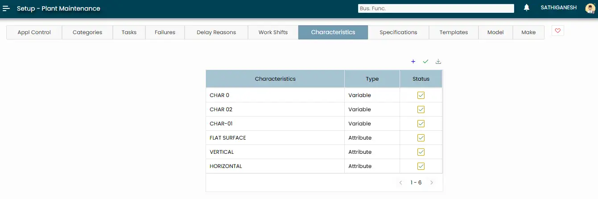

<div data-category="Plant Maintenance" data-title="Characteristics" data-updated="January 27, 2026" data-contributors="RoadmapIT" data-breadcrumb="Home,Plant Maintenance,Characteristics">
  <div class="page-content">
    <p>A characteristic is a way of describing or defining a certain property or attribute of a plant equipment or machinery. A characteristic can have different types, values, formats, and units depending on the nature and function of the equipment or machinery.</p>
    <p>The Characteristic are defined in this screen.</p>
    <h5>Navigation path:</h5>
    <p class="fs-6">Plant Maintenance \ Setup \ Setup-Plant Maintenance \ Characteristics</p>
    
    <ul style="list-style-type: none; align-content: center">
      <li class="mouse-icon">Click to<i class="bi bi-plus fs-4 mx-2 text-primary"></i> Add.</li>
      <li class="mouse-icon">Enter the Characteristic Description</li>
      <li class="mouse-icon">Select the Type (Variable or Attribute)</li>
      <li class="mouse-icon">Click on <i class="bi bi-check-lg fs-4 mx-1 text-success"></i> button to save</li>
    </ul>
  </div>
</div>
